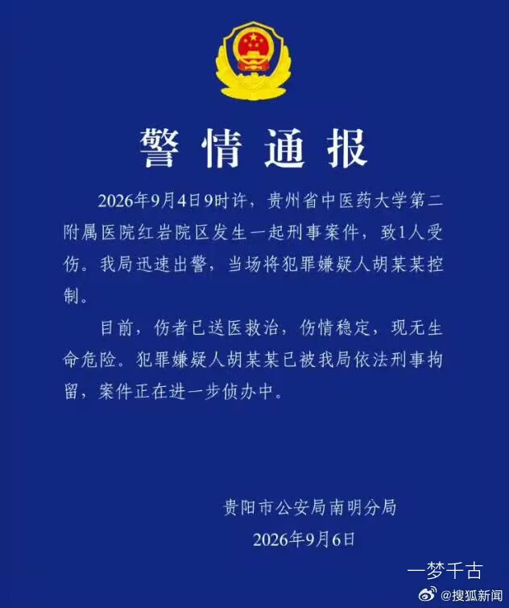

【因不满治疗效果 #患者锦旗中藏刀刺伤医生被刑拘#】#贵州中医大二附院刑案通报# 近日，多名网友反映，贵州中医药大学第二附属医院红岩院区发生一起伤医事件。一名肠癌患者因不满治疗效果，将刀具藏在锦旗中带入医院，欲找老专家未果后，持刀刺向旁边科室的医生。受伤医生系该院肛肠科住院医师，因其腿脚不便，面对突发袭击时未能及时躲避。记者从医院内部人士处了解到，确有此事，该医生身中多刀，目前仍在ICU抢救。
9月6日凌晨，贵阳市公安局南明分局发布警情通报，9月4日9时许，贵州省中医药大学第二附属医院红岩院区发生一起刑事案件，致1人受伤。该局迅速出警，当场将犯罪嫌疑人胡某某控制。目前，伤者已送医救治，伤情稳定，现无生命危险。犯罪嫌疑人胡某某已被警方依法刑事拘留，案件正在进一步侦办中。
9月6日凌晨，贵阳市公安局南明分局发布警情通报，9月4日9时许，贵州省中医药大学第二附属医院红岩院区发生一起刑事案件，致1人受伤。该局迅速出警，当场将犯罪嫌疑人胡某某控制。目前，伤者已送医救治，伤情稳定，现无生命危险。犯罪嫌疑人胡某某已被警方依法刑事拘留，案件正在进一步侦办中。
